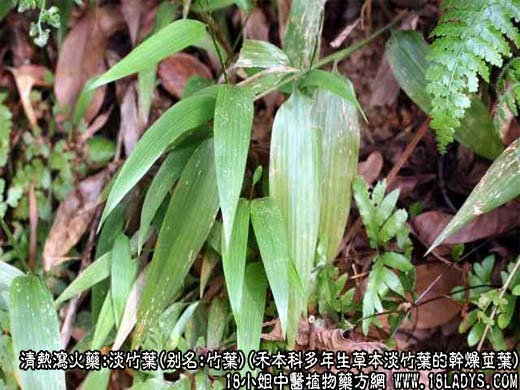
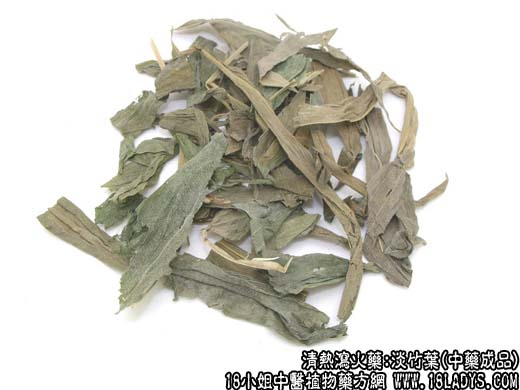
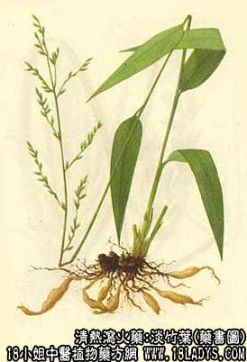

淡竹叶为常用中药。始载《神农本草经》，列入竹叶项下。至《本草纲目》始将竹单列为一品名。
别名：竹叶。
来源：为禾本科多年生草本植物淡竹叶的干燥茎叶。
产地：主产于江苏、浙江、湖南，以及江南各地。
性状鉴别：茎叶全长约50厘米，有时带有部分根茎及须根和残余花序。茎黄绿色中空，圆柱形或已被压扁，直径1~2毫米，有节，节上抱有叶状鞘，叶鞘边缘生有白色长柔毛。叶片多纵向卷曲，展开后广披针形，长5~20厘米，宽2~3.5厘米，绿色或淡绿色，两面有稀毛，叶脉纤细平行，有明显的小横脉。气微，味淡。
以色绿叶长，无须根，无花茎者，为佳。
主要成分：含芦竹萜、白茅萜。
临床作用：解热、利尿。实验证明，淡竹叶确有解热和利尿作用，但效力很轻微。
炮制：切段，生用。
性味：甘淡寒。
归经：入心，小肠经。
功效与作用：清热除烦，利尿。
主治：热病心烦，不寐，小便短赤，涩痛。
临床应用：传统经验认为淡竹叶善清心火（烦热、小便黄赤、面赤口渴、口舌生疮、衄血），从现代医学观点看，所谓“心火”，可能属于身体对炎症感染和代谢因素改变的反应，常见于发热、失水、身体局部充血、神经兴奋性增高等情况。前人经验认为夏季感受暑热而出现心火症状者，用淡竹叶清解之最适宜。常用方为导赤散。
此外，淡竹叶又能辅助石膏清除热病后期的余热，方如竹叶石膏汤。
用量：6~18g。
处方举例：导赤散（《小儿药证直诀》）：淡竹叶12，木通12g，生地18g，甘草梢6g，水煎服。
附：竹叶卷心功效与淡竹叶同，但清心火作用较强，常配莲心等同用。用量6~15g，不宜久煎。
另：苦竹叶
来源：为禾本科多年生灌木状植物苦竹的干燥嫩叶。
产地：主产于江南各省，河南也有生产。
性状鉴别：干燥叶片多呈细卷筒状，长约8~12厘米，展开后宽约1~2厘米。披针形，叶面光滑，叶背粗毛茸，中间有一条较粗的主脉，两边有较细的平行脉数条，边缘一侧有细小毛刺，质脆略有弹性。气无，味苦。
以色绿无枝梗者为佳。
炮制：生用。
产地：与淡竹叶同。
功能：与淡竹叶同。